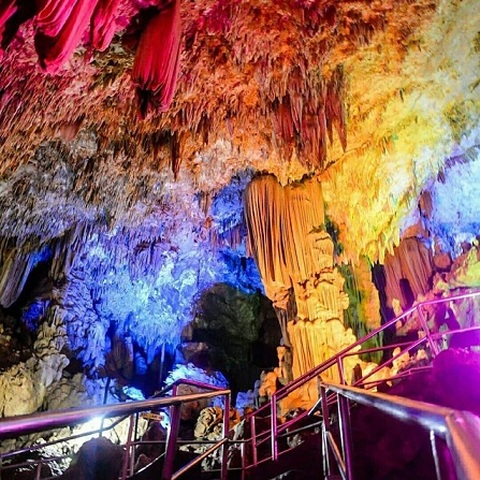
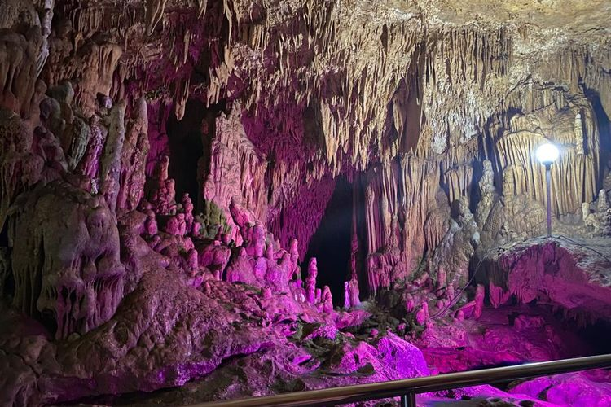
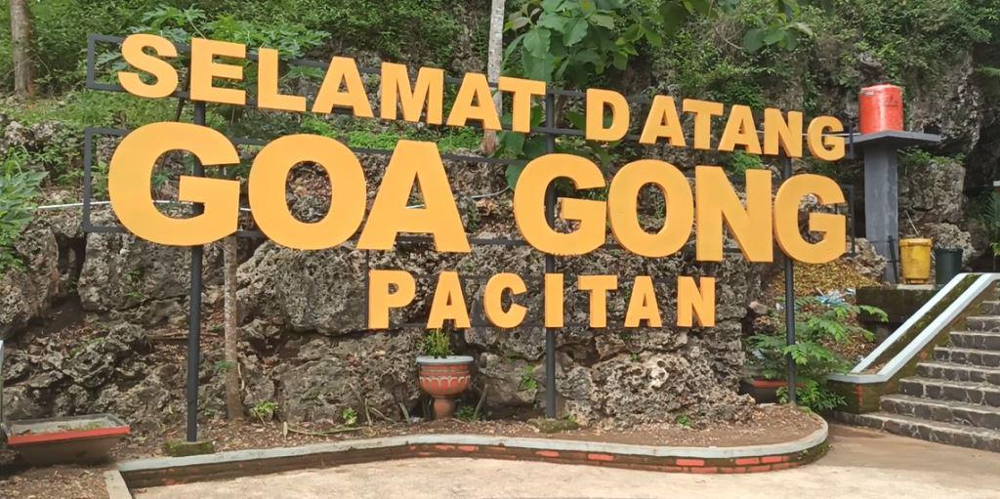
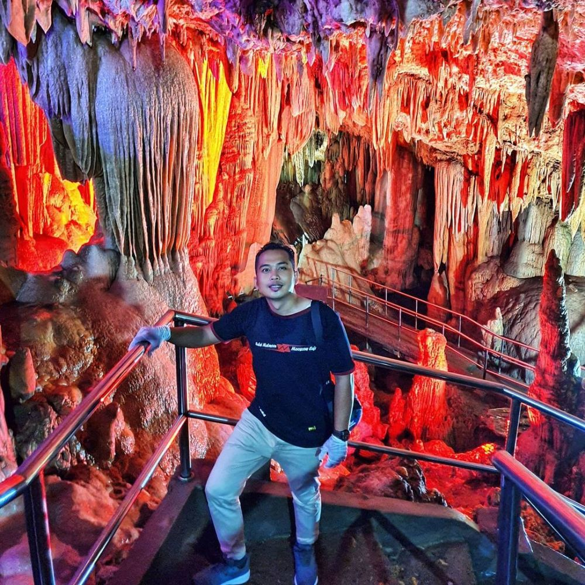

Saat mendengar kata Pacitan, pasti banyak dari kita yang langsung teringat mantan Presiden SBY ya kan?. Wajar sih, karena Pacitan adalah kota kelahiran presiden ke-6 Indonesia. Akan tetapi di sisi lain, para pecinta alam ketika mendengar kata Pacitan pasti akan langsung teringat dengan Goa, Pacitan memang memiliki julukan kota 1000 goa, yang salah satunya adalah Wisata Goa Gong Pacitan. Lokasinya ada di Dusun Pule, Desa Bomo, Kecamatan Punung, Kabupaten Pacitan, Jawa Timur. Jarakya sekitar 37 Km dari pusat kota ke arah barat (arah Wonogiri). Kamu juga bisa akses rutenya di Google Maps ya.
Keindahan Goa Gong ini tidak tertandingi dengan goa lainnya di Pulau Jawa. Bahkan ada yang menyebut juga bahwa Goa Gong adalah Goa terindah di Asia Tenggara loh. Saat kamu memasuki Goa ini, kamu akan disambut dengan formasi stalaktit dan stalakmit yang sangat indah. Tenang saja ada penerangan yang cukup untuk membantu kamu masuk lebih dalam menyusuri lorong goa yang memiliki panjang 256 meter itu. Nah, di ujung lorong kamu baru akan tau kenapa Goa Gong disebut Goa terindah se-Asia Tenggara. Di sana kamu akan dibuat kagum melihat ruangan yang membentuk kubah raksasa sepanjang 100m, lebar 15 sampai 40m, dan tinggi sekitar 20-30m.
Waktu yang kamu butuhkan untuk menjelajahi lorong dan bagian dalam goa adalah sekitar 2 jam, tapi semua itu tidak akan terasa melelahkan karena kamu akan terus menerus dibuat takjub dengan keindahan yang tersaji. Pemerintah setempat juga sudah menambah prasarana di dalam Goa ini loh, jadi kamu ga perlu khawatir, di sana sudah ada tangga, pagar pengaman, penerangan dan kipas angin untuk memudahkan penelusuran. Datanglah dan jelajahi semua keindahan alam Goa Gong Pacitan, mulai dari ruangan-ruangannya, mata air, sampai misteri dan sejarahnya.
Foto lain ditempat ini.
Temukan lokasi tempatnya.
Copyright © MyPacitan. All Right Reserved